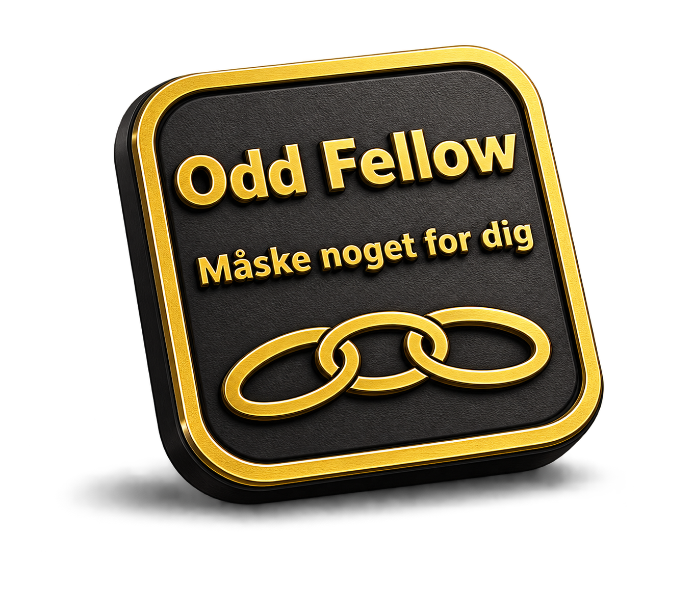

Fællesskab
Et sted hvor man mødes rigtigt — ikke kun digitalt og hurtigt.

Broderloge nr. 35 Concordia
Der er altid plads til ét led mere.
Du har scannet en token fra Broderloge nr. 35 Concordia i Slagelse. Den er en lille invitation til at se nærmere på et fællesskab for mænd, hvor der er tid til ro, samtale og relationer.
Kort sagt
Mønten er en invitation til at kigge nærmere. Ikke en forklaring på det hele. Bag den står et fællesskab af mænd, der mødes om samtale, nærvær og en fast ramme for aftenen.
Hvad er det?
Et sted hvor man mødes rigtigt — ikke kun digitalt og hurtigt.
Faste aftener med plads til alvor, grin, eftertanke og ro.
Ikke networking. Ikke karriereklub. Mere roligt — og mere holdbart.
Vil du læse mere?
Folderen giver et kort overblik over, hvem vi er, hvordan en aften kan se ud, og hvordan du kan tage det første skridt uden at skulle kende det hele på forhånd.
Næste skridt
Skriv til os, læs lidt mere, eller kig med på vores åbne kanaler. Du behøver ikke have styr på det hele først.